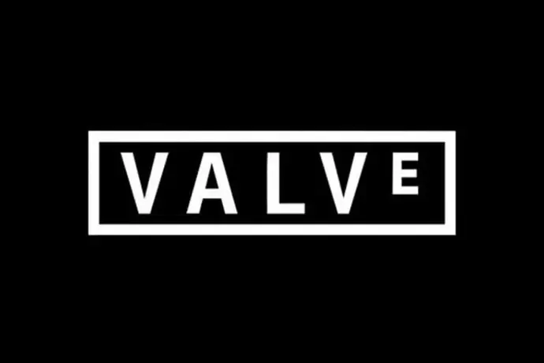

Valve Corporation — американська приватна компанія, що займається розробкою, виданням та цифровою дистрибуцією комп'ютерні ігри. Її найвідоміші продукти — сервіс цифрової дистрибуції ігор та програмного забезпечення Steam, комп'ютерні ігри та серії Half-Life, Portal, Counter-Strike, Left 4 Dead, Team Fortress 2 та Dota 2. Більшість розроблених Valve ігор використовує її власні ігрові движки GoldSrc (до 2004-го), Source та Source 2. Штаб-квартира компанії знаходиться у місті Белвью, штат Вашингтон, неподалік Сіетла[3]. Valve була заснована в 1996 році Гейбом Ньюеллом і Майком Харрінгтоном, вихідцями з Microsoft. Вже її дебютна гра Half-Life здобула величезний успіх і безліч нагород, як і її продовження Half-Life 2. Харрінгтон залишив компанію в 2000 році, залишивши її в руках Ньюелла. У 2003 році компанія запустила сервіс Steam, з роками виріс у найбільшу світі майданчик з цифрової дистрибуції ігор для персональних комп'ютерів - до 2010-х років саме Steam, а не розробка ігор, став Основним джерелом доходу для Valve. У 2010-х роках компанія також зайнялася розробкою та випуском апаратного забезпечення для ігор, такого як шолом віртуальної реальності Valve Index чи портативний комп'ютер Steam Deck. При відносно невеликій кількості співробітників — 360 осіб у 2016 році. прибуток компанії складає близько мільярда доларів на рік. Для Valve характерна плоска організаційна структура без начальників та підлеглих - співробітники рівні між собою і збираються до груп за інтересами; компанія спрямовує фінансування тим проектам, яким приєднується більше працівників. Серед цих проектів були і провальні, як гра Artifact або серія комп'ютерів Steam Machines, але Valve вдавалося окупати їх за рахунок Steam та інших успішних проектів.
 Главное меню